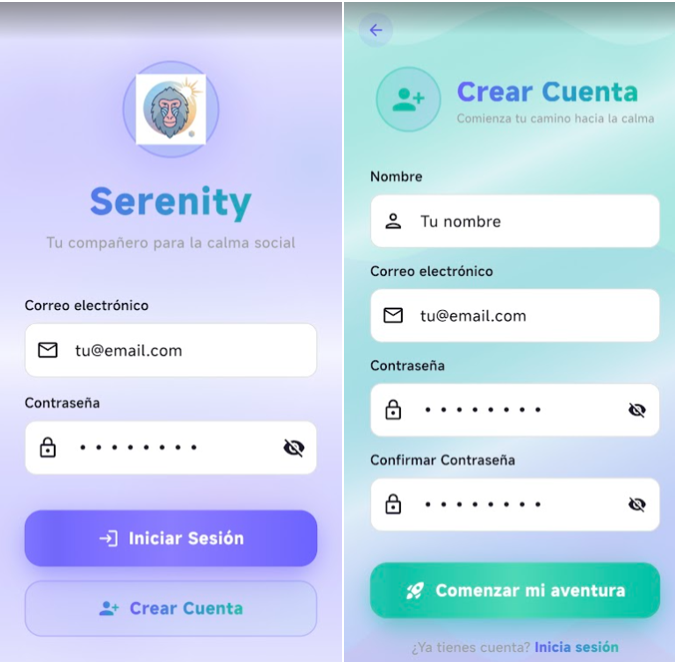
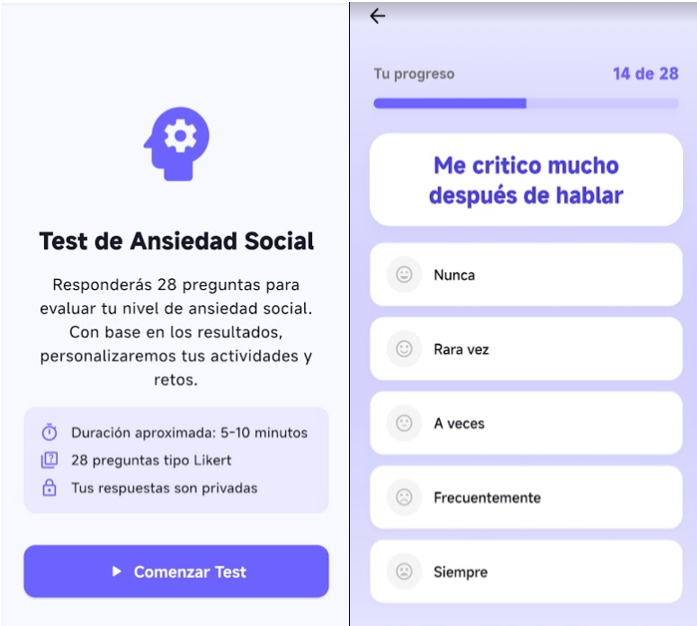
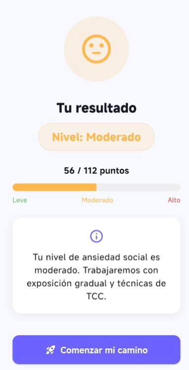
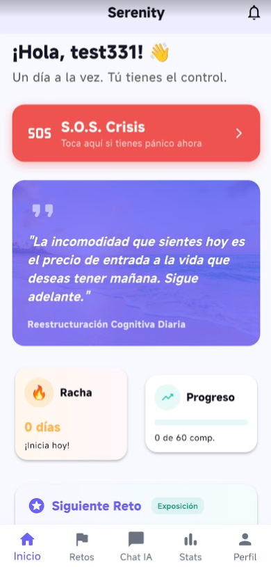
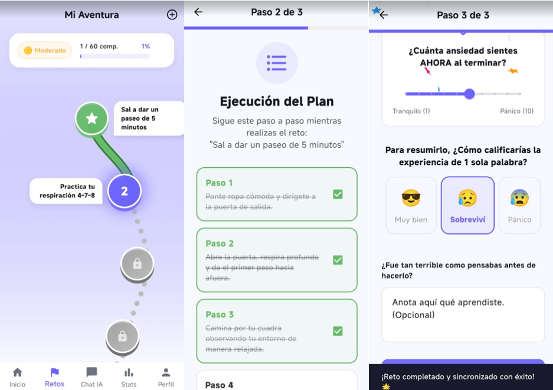
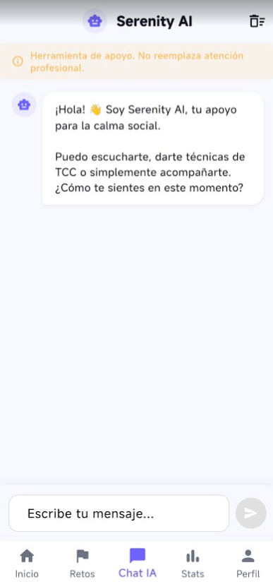
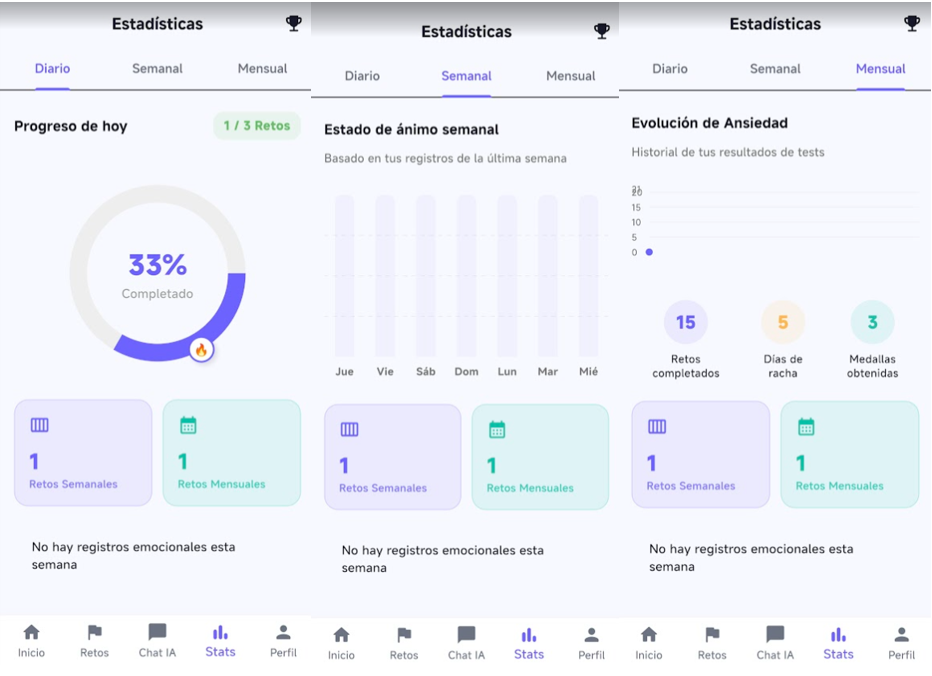
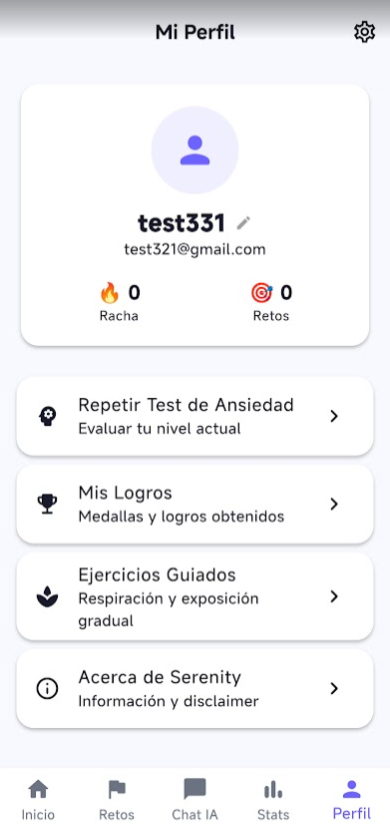
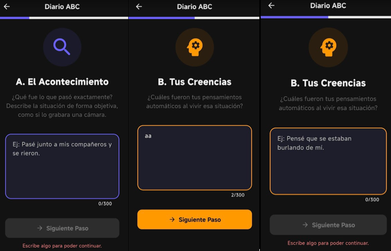

Serenity es una aplicación móvil diseñada para apoyar a personas con ansiedad social mediante herramientas basadas en Terapia Cognitivo-Conductual (TCC). Ofrece un test inicial para conocer tu nivel, un plan de retos personalizado, ejercicios de respiración, un diario ABC para reestructurar pensamientos, y un asistente virtual con IA para conversar en cualquier momento.
La app incluye un panel de control con estadísticas de progreso, registro de ánimo, modo de competencia (preguntas de cultura general y programación) y un perfil para gestionar tus datos. Todo pensado para que cada día el camino hacia la calma sea más sencillo.
Este proyecto fue desarrollado en Flutter con Supabase como backend, y la funcionalidad de IA se integró para ofrecer acompañamiento personalizado.








